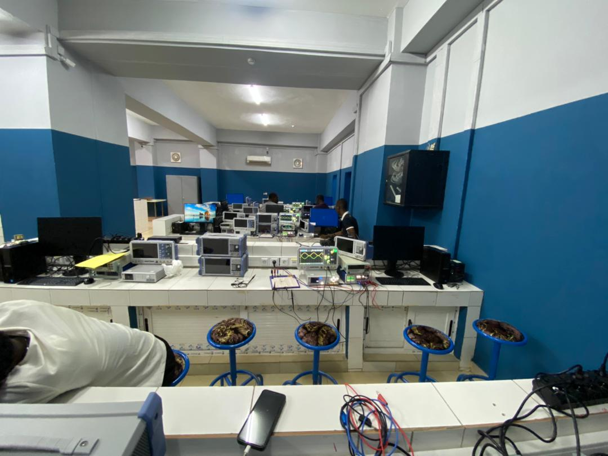
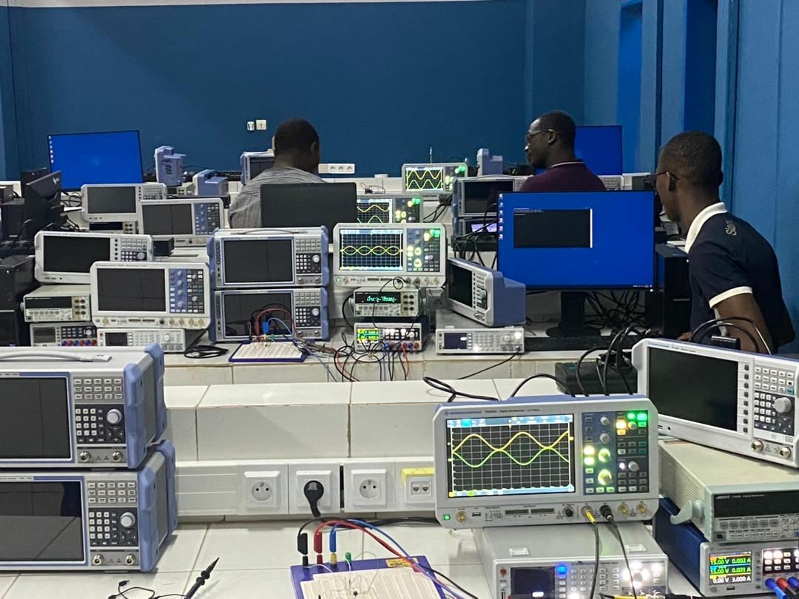

Système de Surveillance Intelligente
Description du Projet
Le projet "Système de Surveillance Intelligente" est une initiative innovante visant à améliorer la sécurité et la surveillance dans divers environnements, tels que les campus universitaires, les bâtiments publics, et les espaces commerciaux. Le système combine l'utilisation de caméras de haute résolution, de capteurs IoT (Internet of Things), et de techniques avancées de traitement d'image et d'apprentissage automatique pour fournir une surveillance continue et proactive.
Le projet se déroule en plusieurs phases :
- Phase 1: Recherche et développement des algorithmes de traitement d'image et de détection des comportements suspects.
- Phase 2: Intégration des caméras et des capteurs avec les algorithmes développés.
- Phase 3: Test et validation du système dans un environnement contrôlé.
- Phase 4: Déploiement pilote et collecte des retours utilisateurs pour des améliorations.
Objectifs
Les principaux objectifs de ce projet sont:
- Améliorer la sécurité en temps réel grâce à une surveillance continue et automatisée.
- Développer un algorithme capable de détecter et d'identifier les comportements suspects avec une précision élevée.
- Intégrer le système avec des dispositifs IoT pour une meilleure réactivité et une gestion centralisée.
- Fournir des alertes en temps réel aux utilisateurs finaux via des notifications sur leurs appareils mobiles.
- Générer des rapports détaillés sur les incidents et les comportements détectés pour une analyse approfondie.
- Assurer la confidentialité et la protection des données collectées conformément aux réglementations en vigueur.

Technologies Utilisées
- Caméras IP de haute résolution
- Capteurs IoT (mouvement, température, etc.)
- Algorithmes de traitement d'image et de vision par ordinateur
- Techniques d'apprentissage automatique et d'intelligence artificielle
- Infrastructure cloud pour le stockage et le traitement des données
- Applications mobiles pour les notifications en temps réel
Équipe du Projet
Le projet est mené par une équipe multidisciplinaire composée de :
- Dr. OUEDRAOGO Jean ClaudeOOUEDRAOGO Jean Claude- Chef de Projet et Expert en Vision par Ordinateur
- Dr SAVADOGO ABIDINE Dr SAVADO- Ingénieur en Intelligence Artificielle
- Dr TANOU Ahmadou Nourdine - Développeur IoT
- BOURKOUNOURE Rebecca- Architecte Cloud
- Emily BAMBARA- Analyste de Données
- David xys - Développeur Mobile
Résultats Attendus
À la fin du projet, nous espérons atteindre les résultats suivants:
- Un système de surveillance fiable et précis, capable de fonctionner 24/7.
- Des alertes en temps réel avec un taux de faux positifs minimal.
- Un retour utilisateur positif avec des suggestions d'amélioration pour la version suivante.
- Des rapports d'incidents détaillés permettant une meilleure compréhension des comportements anormaux.